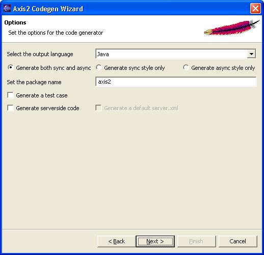

The Axis2 code generator comes built-in with an Eclipse plug-in. This document explains the installation and usage of the Axis2 code generator plug-in.
The easiest way to obtain the plug-in would be the binary distribution. The full Axis binary distribution contains the compiled version of this plug-in under the tools directory.
If one needs to build the plugin from source it is not as trivial as running the Maven build. The reason is that the plug-in depends heavily on the Eclipse classes, which are only available in an Eclipse environment. The recommended procedure is to run the create-project.xml (in the "modules\tool" directory of the source distribution) build file which will create two folders (the other one for the Service Archiver tool) and copy the necessary files to relevant folders. Then Eclipse should be configured to open the contents in a PDE project. Please go through the Eclipse documentation to learn how to open projects in the PDE format.
Once you've obtained the plug-in just unzip the content of the plug-in archive to the eclipse plug-in directory (if it is the zipped-binary version) or copy the necessary folders to the eclipse plug-in directory and restart Eclipse.
Note - This plug-in works on Eclipse version 3.0 and upwards
If the plug-in is properly installed you should see a new wizard under the "New" section.(use the File -> New -> Other or Ctrl + N )
Selecting the wizard and pressing the next button will start the code generator wizard. Following is the first wizard page.

To move on to the next page the WSDL file location must be given. The browse button can be used to easily browse for a file rather than typing the whole path.
Once the WSDL file is selected, codegen options are to be selected. By far this is the most important page in this wizard, which determines the characteristics of the code being generated. Novices need not worry about these options since the most common options are defaulted, But advanced users will find it very easy to "turn the knobs" using these options.

Once the options are taken care of, only the final step of the code generation is left. it is the selection of the output file location.

When the output file location is selected, the Finish button will be enabled. Pressing the finish button will generate the code and a message box will pop up acknowledging the success. Well Done! Now you are ready for Axis2 Code generation.
Just as old times there will be users who wish to use the command line version of the tool. This basic tool is implemented by the WSDL2Code class and just for the convenience in the java case (which would be the majority) there is another WSDL2Java class. One can choose to run the main classes directly or use one of the scripts to run the WSDL2Code and WSDL2Java appropriately. (the scripts are found in the bin directory of the binary distribution)
| -uri <Location of WSDL> | WSDL file location. This should point to a WSDL file in the local file system |
| -o <output Location> : | output file location. This is where the files would be copied once the code generation is done. If this option is omitted the generated files would be copied to the working directory. |
| -l <language> | Output language. Currently the code generator can generate
code in Java and CSharp. (CSharp support is limited) When omitted defaults
to Java. Allowed options are
|
| -p <package name> | The target package name. If omitted, a default package (formed using the target namespace of the WSDL) will be used. |
| -a | Generate code only for async style . when this option is used the generated stubs will have only the asynchronous invocation methods. Switched off by default. |
| -s | Generate code only for sync style . When this option is used the generated stubs will have only the synchronous invocation methods. Switched off by default. When used with the -a option, this takes precedence. |
| -t | Generates a test case. In the case of Java it would be a junit test case. This test case will generate a dummy implementation of the service and a relevant service.xml and will deploy this particular service in a SimpleHttpServer. Then looking at the WSDL it will generate test methods that will do web service invocation both synchronously and asynchronously and test the deployed service. |
| -ss | Generates server side code (i.e. skeletons). Default is off |
| -sd | Generates the service descriptor (i.e. server.xml). Default is off. only valid with -ss |
The code generator also comes bundled with an Ant task. The ant task is implemented by the org.apache.axis2.tool.ant.AntCodegenTask class. Following are the ant task attributes.
| wsdlfilename | WSDL file location. Maps to the uri option of the command line tool |
| output | output file location. This is where the files would be copied once the code generation is done. If this option is omitted the generated files would be copied to the working directory. . Maps to the -o option of the command line tool |
| language | Output language. Currently the code generator can generate
code in Java and CSharp. (CSharp support is limited) When omitted defaults
to Java. Allowed options are
Maps to the -l option of the command line tool |
| packagename | The target package name. If omitted, a default package (formed using the target namespace of the WSDL) will be used. Maps to the -p option of the command line tool. |
| asynconly | Generate code only for async style . when this option is used the generated stubs will have only the asynchronous invocation methods. Defaults to false if omitted Only true and false are applicable as values. Maps to the -a option of the command line tool. |
| testcase | Generates a test case |
| synconly | Generate code only for sync style . when this option is used the generated stubs will have only the synchronous invocation methods. Defaults to false if omitted. Only true and false are applicable as values. Maps to the -s option of the command line tool. |
| serverside | Generates server side code (i.e. skeletons). Only true and false are applicable as values. Default is false. Maps to the -ss option of the command line tool |
| generateserverxml | Generates server side code (i.e. skeletons). Only true and false are applicable as values. Default is false. Maps to the -sd option of the command line tool. |
Following is an example ant build file that uses the custom Ant task.
<?xml version="1.0"?> <project name="CodegenExample" default="main" basedir="."> <target name="declare" > <taskdef name="codegen" classname="org.apache.axis2.tool.ant.AntCodegenTask" classpath="classes"/> </target> <target name="main" depends="declare"> <codegen wsdlfilename="C:\test\wsdl\CombinedService.wsdl" output="C:\" serverside="true" generateserverxml="true" /> </target> </project>
Notice the main target that uses the "codegen" task which will use the org.apache.axis2.tool.ant.AntCodegenTask class and run the code generation tool internally while passing the relevant arguments and do the proper generation. If a user types
>ant or >ant main
it will generate the serverside code and service.xml for the given WSDL file(C:\test\wsdl\CombinedService.wsdl) and the generated code will be written to C:\ directory.
For this Ant task to work the following jars need to be in the class path.